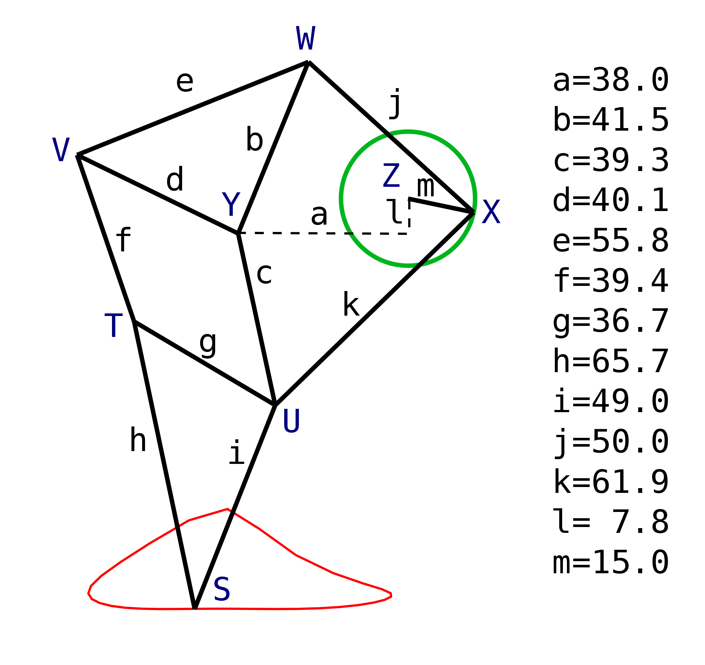
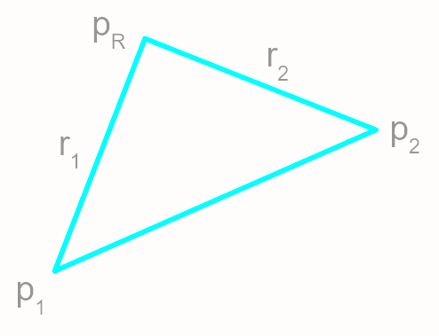
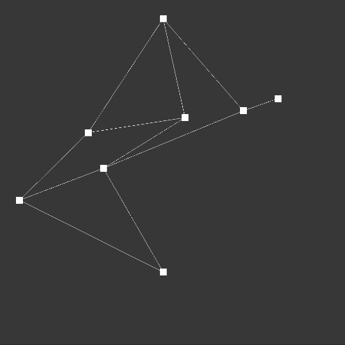
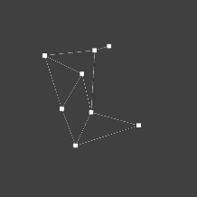
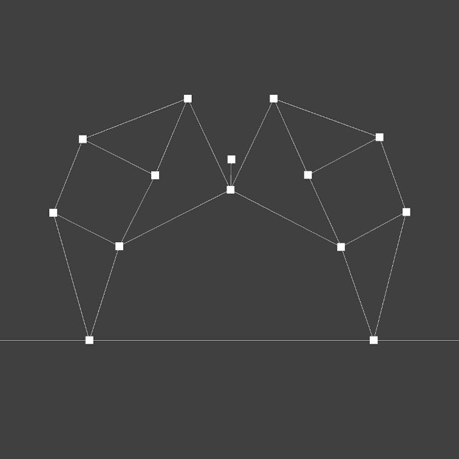
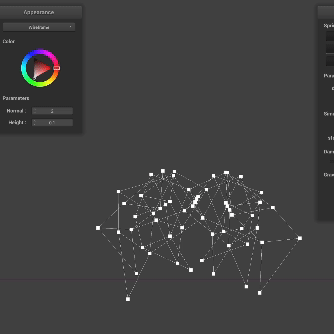
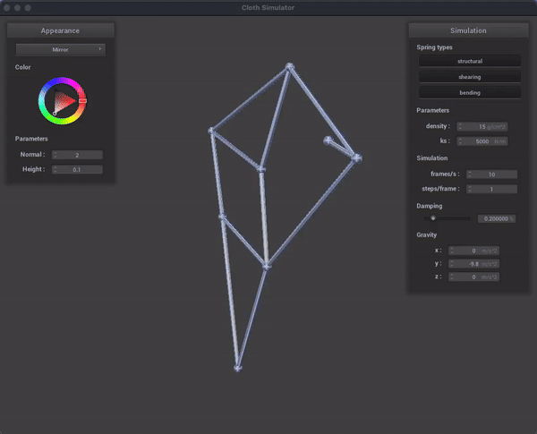

CS 184: Computer Graphics and Imaging, Spring 2024
Final Project Report: Strandbeest Simulation
Derek Guo, Marcus Cheung, Pranav Kolluri, Rohan Agrawal
Abstract
We created a simulation of a strandbeest walking through a desert.
A Strandbeest, resembling a mechanical animal, is a kinetic sculpture propelled by the wind, mimicking the motion of walking.
It's sets of legs are all mechanically interlinked in a rather pleasing motion, and we sought to recreate this.
We primarily focused on simulating the physical joints of the strandbeest, rigging of our model, the creation of a terrain to walk in, and the visual rendering of the sand and sky.
The strandbeest is a complex mechanical structure that walks by using the wind to power its legs. Our simulation utilizes a reduced-coordinate physics simulation, allowing for the simulation of rigid systems with the added benefit of remaining stable even with large time steps.
This avoids the issues seen in games like KSP and Space Engineers with their spring-based physics systems where the physics can become unstable and cause the simulation to explode.
We also implemented a terrain system that allows the strandbeest to walk on a realistic sand dune. The terrain is generated from a heightmap and uses a complex shader to simulate the sand and the shimmering effect that sand has in the sun.
The sky is also rendered using a shader, with a gradient between two shades of blue, a dynamic sun, and clouds generated using Perlin noise. The scene rendering incorporates ray marching techniques to simulate atmospheric effects and depth.
This project was very wide in scope, with each individual element being quite complex. We are quite happy with the results given our starting codebase and timeframe, but there is still a lot of room for improvement.
Technical Approach
Physics Simulation
We implemented a system for simulating linkages using a reduced coordinate formulation, which uses a set of generalized coordinates equal in number to the degrees of freedom of the system. We used this reduced coordinate formulation with Lagrangian mechanics to physically simulate a strandbeest that realistically responds to external forces and collisions. Our system can simulate stiff joints and remains very stable even with very large time steps. In order to give it an environment to walk through, we created a desert environment using procedurally generated dunes and a sand and skybox shader which features glittering, sun, and clouds. Our system was implemented on top of hw4, using Eigen for matrix operations.
We started from hw4 for rendering and shaders, but did not use any of the physics simulation components.
Reduced-Coordinate Formulation
We picked the crankshaft angle as our single internal generalized coordinate with translation and rotation as external coordinates and simulated the beest in a reference frame centered on its center of mass and rotating with the beest. Our system requires a resolution function $p(q)$ which takes in generalized coordinates and outputs the position of each point, as well as its derivatives $\frac{dp}{dq}$ and $\frac{d}{d t} \frac{dp}{dq}$. We further implemented a system to automatically find $p(q)$ and its relevant derivatives for any linkage, which requires us to only define $p(q)$ and its derivatives for just enough points to fully determine the system and a resolution order which specifies the order in which to calculate the positions of the remaining points. In the future, we hope to automate even these latter two processes using graph traversal algorithms, which will automatically select generalized coordinates and calculate the remaining degrees of freedom of each point, resolving $p(q)$ for a point once it is fully constrained.


A diagram of the Jansen linkage, one of the legs of the strandbeest. Our generalized coordinate $q_0$ is the angle from point $Z$ to $X$.Given $p_1, p_2$ and their derivatives, as well as $r_1, r_2$, we can calculate $p_R$ and its derivatives using geometry and the chain rule.
Equations of Motion
By using a reference frame centered on the strand beast, we can ignore translation and rotation, reducing our degrees of freedom from 7 to 1. We can reintroduce the effects of our non-inertial reference frame using the fictitious centrifugal, Coriolis, and Euler forces. Fictitious and external forces are represented by a potential energy gradient in the position of the corresponding point mass. We use Lagrangian mechanics to derive the equations of motion. Lagrange's equations state that $\frac{d}{dt} (\frac{dL}{d \dot{q}}) - \frac{dL}{dq} = 0$, where the Lagrangian is defined as $L = T - V$, the kinetic energy minus the potential energy. Using the derivatives of $p(q)$ which we calculated, the equations of motion are as follows:
As mentioned before, external and fictitious forces are implemented as potential gradients in the positions of the corresponding point masses, so $-\frac{dV}{dq} = \frac{dp}{dq}^T F$. As an interesting observation, when a force $F$ is applied, it results in the point masses accelerating by $\frac{dp}{dq} (\frac{dp}{dq}^T \frac{dp}{dq})^{-1} \frac{dp}{dq}^T F$, which is exactly the projection of $F$ onto the columns of $\frac{dp}{dq}$. Intuitively, this the motion caused by the force is the projection of the force onto the directions in which the system is free to move.

Wireframe of a single strandbeest leg as $q$ increases at a constant rate.

Wireframe of a single strandbeest leg responding to internal forces.
External Forces
The extrinsic coordinates are calculated using conservation of momentum. Extrinsic translational momentum is updated as if all external forces had been applied to the center of mass. We update the extrinsic angular momentum such that the total angular momentum is conserved. This effectively applies an Euler force which explains any change in internal angular momentum. At first, we attempted to include rotation and translation in our generalized coordinates. For translation, this is very easy as $\frac{dp}{dt}$ just contains copies of the identity matrix, and $\frac{d}{dt} \frac{dp}{dt} = 0$. However, it is extremely difficult for rotation, as no matter which of many available representations of rotations we choose, the expressiosn for the relevant derivatives of $p(q)$ are very messy. Additionally, rotations are not additive, so there is further hassle in expressing them as generalized coordinates and velocities. We were surprised to learn that the derivative of the rotation vector (a vector pointing along the axis of rotation, with its magnitude as the rotation angle) is not the angular velocity.
After calculating the state evolution based on internal dynamics, we update the position of each point and check for collisions. Since our desert is represented by a height map, we can easily find the triangle directly below each point and check if the point is on the top side of it. For points beneath the surface, we add a constraint $\sigma_i = 0$, where $\sigma_i$ is the distance of the point above the surface. Each collision applies a force $f_i = \lambda_i \frac{d \sigma_i}{d p_i}$. We calculate a Jacobian matrix $\frac{d\sigma_i}{d\lambda_i}$ using the equations of motion calculated before, where entry $(i, j)$ describes the amount by which force $j$ contributes to moving point $i$ out of the ground. We then solve for $J \lambda = -\sigma$ to determine the constraint forces. However, this keeps the points constrained to the ground, but we only collisions to push. Therefore, if this solution contains any negative elements in $\lambda$, we remove the corresponding rows and columns and repeat until $\lambda$ is entirely positive or empty. This is somewhat of an ad-hoc approach in lieu of a proper mixed linear complementarity solver, but works acceptably for a small number of contact points.
Finally, we apply friction by applying a force opposing the component of velocity parallel to the surface for all colliding points. The magnitude of this force is proportional to the collision force but does not depend on the velocity magnitude.

A strandbeest standing on the ground with collision solving

A strandbeest walking with friction
Rigging Body Geometry
To give the strandbeest a body, we build 3D geometry over the wireframe of pointmasses and structural springs as spheres and cylinders respectively. Firstly, we defined these two geometries. For spheres we adapted what existed in homework 4, turning off collision logic as to not interfere with the underlying point mass representation. On each timestep we iterate through our point masses, editing their corresponding sphere's position coordinates to match. We defined cylinders with a given central point, radius, height, and axis vector representing its orientation. Then to render them we iterate through our list of structural springs, computing center point, height, and axis from the spring's end pointmasses. Center and height were computed using the midpoint and distance formulas, while the direction between the end pointmasses was used to determine the axes that would become the columns of the combined rotation and scaling matrix. These were assembled into a homogeneous transformation matrix to render the cylinder mesh in the correct location

Rigged wireframe with mirror shader
Terrain
Mesh Generation
Our terrain has two primary components: the mesh and the shader. The mesh system is composed of a wrapper and main mesh method, similar to the sphere. The mesh is generated from a grayscale heightmap image. If loading fails, a flat plane is generated. The mesh dimensions are derived from the image dimensions and the desired scale. The mesh is then generated by iterating through each pixel in the image and creating a vertex at the corresponding position. Texture coordinates, positions, normals, and tangents are generated, like sphere_drawing in the hw4 codebase, but the process is much more convoluted due to using a mesh instead of a sphere.
Face normals are calculated by considering adjacent vertices, and vertex normals are computed by accumulating face normals. Tangents are computed using UV mapping and the method of finite differences to approximate the derivative of the heightmap.
Since our mesh was generated from a heightmap, we can detect collisions by using the $x, z$ coordinates of candidate points to index into our array of vertices. We can extract the 3 vertices the collision point is between and then compute the offset from the plane to the collision point. If the offset is within a certain threshold, we can consider the strandbeest to be on the terrain. This collision method also works nicely with the cloth, which is how we did our initial testing.
A demo of the terrain and collisions using the basic texture mapping shader for visibility
Shader
The shader is quite a bit more complicated than the base phong shader from hw4. We intended to try to replicate the sand from games such as Journey, Battlefield 2042, and others.
The core hallmarks of these were larger scale perturbations in the sand (ripples) as well as the characteristic shimmer that sand has in the sun.
It features bump mapping to simulate surface irregularities and the ripples.
In addition, Perlin noise is utilized to generate further perturbations in the sand akin to ripples.
Sparkles are generated by perturbing normals based on a noise function, with a lot of work put in to attempt to minimize moire patterns.
A demo of the sand shader and the terrain interacting with the cloth
A fair few challenges were encountered in getting the terrain functional. Scaling the mesh was difficult as it created havoc with the collision detection and the vertices.
However, an even bigger challenge was the shader. The shader was a massive undertaking, with a lot of time spent on it. The iteration the we have now is the 5th or 6th iteration of the shader, with the previous ones being scrapped due to various issues.
In particular, we ran into issues with the sparkles causing obscene amounts of moire patterns and other undesirable artifacts. This required a lot of trial and error with various noise functions with different parameters.
The ripples also proved to be a massive challenge, particularly with trying to get small scale ripples to work.
This is something that we still want to improve on as while we're happy with the large scale perturbations, the small scale ripples are very hard to see, despite having gone through a lot of iterations (at least a week's worth of work).
We also had to drop our stretch plan of adding in "footsteps" into the shader, due in part to technical limitations imposed by the fairly narrow scope of the hw4 codebase.
In particular, we struggled to both accurately keep track of steps in a manner that would be performant with the fragment shader, which must be able to efficiently identify if a step has been taken on a given pixel.
A preliminary version of this was implemented (multiple times), but we were never abler to get it to function with enough performance. Engines like Unity and Unreal have much more sophisticated systems for this, but we were unable to replicate this in our shader.
Our test environment with the sand shader, dune mesh, an old version of the sky shader, and a demo strandbeest leg
We are, all in all, quite happy with the shader. It's not perfect, but it's a good start and we're proud of what we've accomplished. We're particularly happy with the large scale perturbations and the shimmer, which we feel are quite close to what we were aiming for.
Had we had the additional scope to add self-shadowing, we think the terrain would be rather convincing.
Sky/Atmospherics
We implemented a sky rendering system using shaders and cubemaps. To achieve a realistic depiction of the sky, we employed a gradient between two shades of blue. This gradient blends together, mimicking the color of the sky in real life.
For the sun, we implemented a dynamic rendering approach. A point is positioned in world space and adjusted dynamically based on the camera's perspective. This ensures proper alignment with the viewer's line of sight, making the sun appear fixed in the sky. In the fragment shader, by evaluating the dot product between the camera's position and the sun's direction, we determine the angle between the sun and the current pixel, allowing for realistic lighting effects.
Our cloud generation method utilizes value noise, a technique for creating natural-looking textures. We apply Fractal Brownian Motion, stacking multiple layers of noise to create pseudorandom and realistic cloud patterns. This process results in detailed and realistic cloud and fog formations in the sky.
Additionally, the scene rendering incorporates ray marching techniques to simulate atmospheric effects and depth. By iteratively advancing along the ray direction and evaluating the scene function, we generate the final color output. This approach enables the simulation of complex atmospheric interactions, contributing to the overall realism of the sky rendering.
Our test environment with the sand shader, dune mesh, an a sky shader with a radiant sun and clouds
Implemented the reduced-coordinate physics simulation using Lagrangian mechanics and collision detection and response. Also added the glow around the sun.
Marcus
Implemented the rigging of the strandbeest wireframe with 3D geometry and homogenous transformation algorithm to correctly build the cylinder according to given placement coordinate, height, radius, and axis params.
Pranav
Implemented the terrain mesh builder as well as the accompanying shader. Also contributed to the final sky shader (and had created quite a few previous versions that were scrapped).
Rohan
Implemented cylinders, as well as contributed to the sky shader and sun.